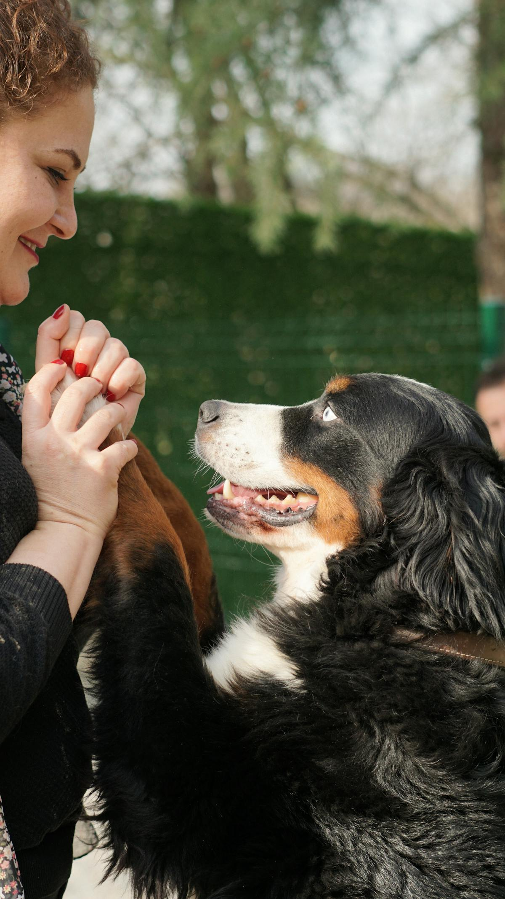
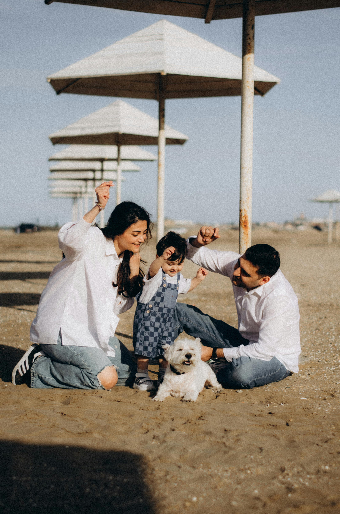
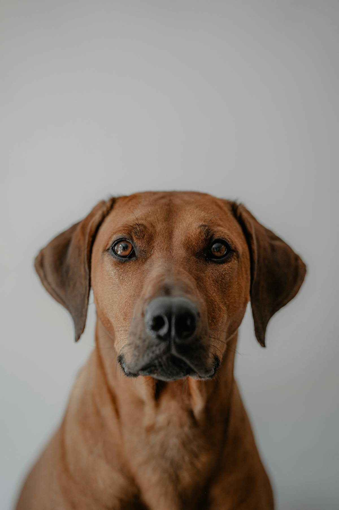
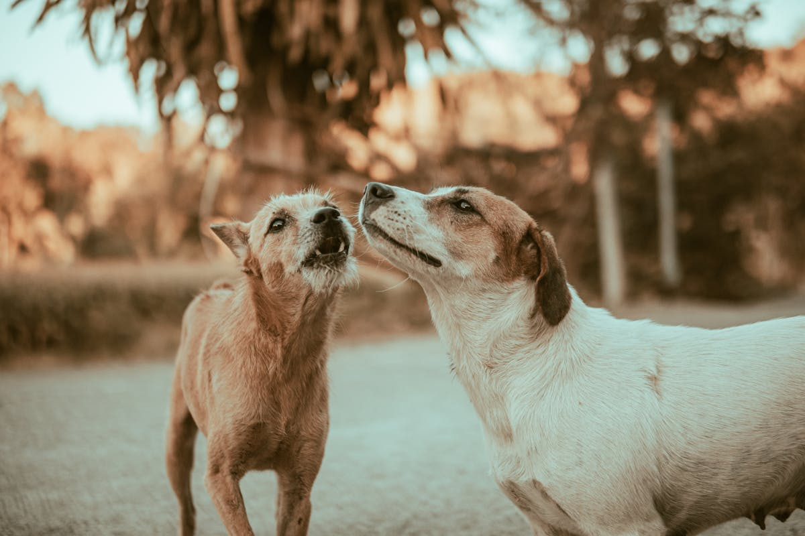

Avant l'arrivée

Tu y penses depuis des mois. Peut-être des années. Avant même de parler races, sexes ou refuges, il y a une question plus honnête à poser : pourquoi ce deuxième chien, maintenant, dans cette maison-là.
La vraie question à se poser
Avant « quel chien on prend ? », il y a une question qu'on évite souvent parce qu'elle dérange un peu : pourquoi tu veux un deuxième chien. Pas « pourquoi tu aimes les chiens » — ça, je le sais déjà. Mais qu'est-ce qui, dans ta vie aujourd'hui, te pousse à en ajouter un deuxième. C'est la réponse à cette question qui va déterminer 80 % de la réussite ou de la difficulté de l'accueil.
Il y a de bonnes raisons, et il y a des raisons qui vont te mettre en difficulté dès les premières semaines. Les bonnes raisons, je les reconnais très vite en séance : la personne a de l'expérience, elle a le temps, elle a l'espace, elle a un chien résident équilibré et sociable, elle a vraiment envie de doubler le travail, pas juste d'avoir deux chiens pour le prix d'un.
Les bonnes raisons
- Tu as l'expérience, le temps et l'espace pour un deuxième
- Ton chien actuel est équilibré, sociable, et adore la compagnie canine
- Tu as toujours rêvé d'une maison avec plusieurs chiens, et tu es prêt à doubler le travail
- Tu veux offrir un foyer à un chien qui en a besoin, en conscience
Les raisons qui posent problème
- Tu penses qu'un deuxième va « tenir compagnie » à ton chien pendant tes absences
- Ton chien actuel a des difficultés (anxiété, réactivité, ennui) et tu espères qu'un copain va régler ça
- Tes enfants ont demandé un autre chien
- C'est une impulsion — tu as flashé sur une annonce
Un deuxième chien n'est jamais un médicament. Un chien anxieux ne guérit pas avec un copain — il contamine souvent le nouveau. Un chien qui s'ennuie ne s'amuse pas mieux en duo — il s'ennuie à deux. Si tu as des difficultés avec ton chien actuel, règle-les d'abord, puis envisage un deuxième. Un éducateur bienveillant peut t'y aider en quelques séances.
Le budget, le temps, l'énergie — la vraie addition

Beaucoup de familles me disent « ce sera à peine plus de travail ». Ce n'est pas vrai, et ce n'est pas grave de l'entendre — mieux vaut l'entendre avant que de s'en rendre compte trois mois après l'arrivée, quand la fatigue est installée. Deux chiens, ce n'est pas 1,2 chien, c'est 2 chiens. Les coûts se doublent, les temps se doublent, la charge mentale aussi.
Voici ce qui double, concrètement, et qui doit entrer dans ta projection avant de décider :
- Les gamelles, les croquettes, les friandises
- Les visites vétérinaires, les vaccins, les antiparasitaires
- L'assurance, l'identification, les papiers administratifs
- Les frais imprévus (un chien sur deux aura au moins une urgence véto dans sa vie)
- Les sorties — et surtout, les sorties individuelles qu'il faut maintenir
- Les apprentissages — chacun doit apprendre pour son compte
- Les temps de calme et de pause, impossibles à bâcler
En temps, compte au moins une heure par jour en plus la première année, et une charge mentale doublée en permanence. Cette heure, elle ne se trouve pas dans le week-end — elle se trouve en semaine, le soir, quand tu es déjà fatigué. C'est là que beaucoup de familles craquent : pas parce que leur deuxième chien est difficile, mais parce qu'elles n'avaient pas prévu que le quotidien serait à ce point réorganisé.
En Suisse, le budget annuel pour un chien de taille moyenne tourne entre 2 500 et 4 000 CHF selon la région, la race et les imprévus de santé. Pour deux chiens, prévois large, pas juste. Et garde une enveloppe « urgence véto » équivalente à un mois de budget courant, accessible rapidement. Un accident ou une opération, ça arrive, et ça ne prévient jamais.
Les signaux qui disent « pas maintenant »
Il y a des moments où prendre un deuxième chien, même si l'envie est là depuis longtemps, est une mauvaise idée. Ce n'est pas un jugement sur toi ni sur ton projet — c'est une question de timing. Les chiens s'adaptent très bien à des vies stables. Ils galèrent beaucoup plus quand le contexte change en même temps qu'ils arrivent.

Parmi les signaux qui disent « attends quelques mois », j'en vois régulièrement en séance. Le déménagement récent : tu viens de changer de maison depuis moins de trois mois, ton chien résident cherche encore ses repères. Le bébé prévu ou qui vient d'arriver : c'est déjà une révolution dans la maison, en ajouter une deuxième est épuisant pour tout le monde. Le gros changement professionnel : nouveau poste, nouvelle charge de travail, nouveaux horaires. Le jeune âge du chien résident, moins de 12 mois : ton chien n'a pas fini de se construire, et lui ajouter un compagnon pendant sa propre éducation va diluer ton énergie.
Il y en a d'autres, plus personnels mais tout aussi déterminants. Le projet de voyage de plus de trois semaines dans les six mois qui viennent : tu vas devoir laisser ton nouveau chien en pension à peine arrivé, c'est une ouverture de plaie. Le couple qui n'est pas à 100 % d'accord : si une personne du foyer n'est pas pleinement partante, le deuxième chien va cristalliser les tensions. La phase de travaux : si la maison est en chantier, reporte.
Attends d'être dans une phase de vie stable. Les six premiers mois avec un nouveau chien demandent énormément. Si le contexte est mouvant, tu vas payer deux fois le prix — en stress pour toi, en stress pour les chiens. Mieux vaut attendre six mois de plus et réussir, que se précipiter et devoir rendre ou replacer un chien au bout de l'été.

Ce que tu vas construire dans les chapitres suivants
Si tu as relu ces trois sections et que tes réponses sont alignées — la raison est saine, le budget est là, le timing est stable — alors on peut passer à la suite. Le chapitre 2 t'aide à évaluer ton chien résident de manière objective. Le chapitre 3 te guide sur le choix du deuxième. Le chapitre 4 prépare ta maison et ton matériel. Et à partir du chapitre 5, on entre dans le vif du sujet : la rencontre en terrain neutre, l'arrivée à la maison, les premières heures, la première nuit.
Prends ton temps. Un deuxième chien ne se décide pas en un week-end — et quand c'est bien préparé, ça ne se regrette jamais.